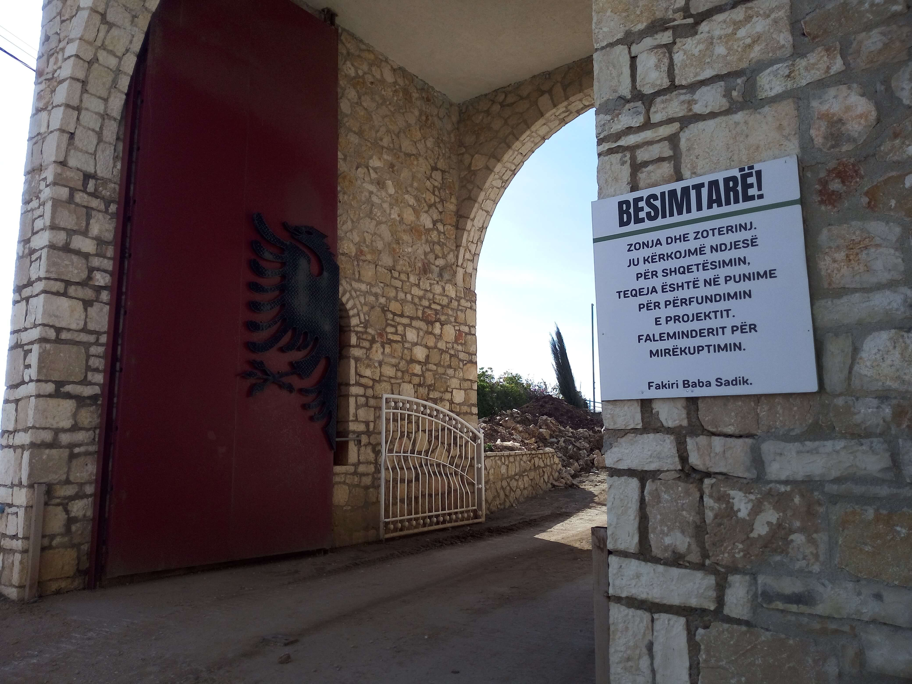

Baba Sadık Tekke
Albania · Ionian Coast
Baba Sadık Tekke, also known as the Reshat Dede Baba Tekke, is a Bektashi religious complex on a hillside near Sarandë, overlooking the Ionian Sea and the island of Corfu. It is a place of spiritual significance and cultural heritage in southern Albania.
My Photo Gallery
Explore my personal travel photos from Baba Sadık Tekke.
View All Photos ↗